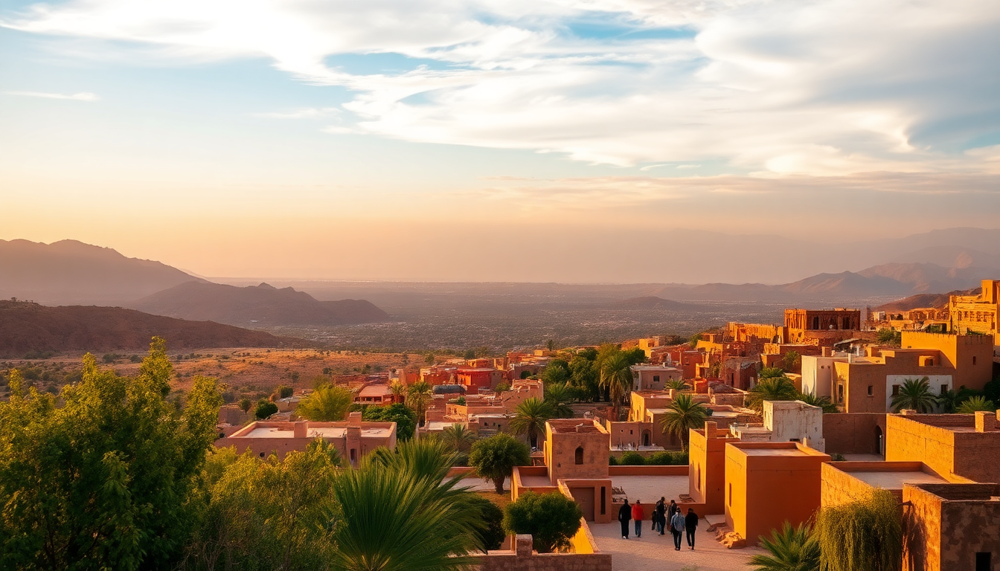

Best Day Trips from Marrakech: Atlas, Essaouira & Ouarzazate

I’ve done all three of these trips from Marrakech multiple times, and each feels like a completely different country. The Atlas Mountains are an hour away but feel like another world. Essaouira is a full-day coastal escape with serious wind and fresh fish. Ouarzazate is a long day but worth it for the desert scenery and film-set kasbahs. Here’s what I actually learned—where to go, what to skip, and how to avoid the worst of the tourist crowds.
Why take a day trip from Marrakech instead of staying in the city?
Marrakech is intense. The medina noise, the constant touts in Jemaa el-Fnaa, the heat—it wears you down after two days. A day trip gives you breathing room. You get mountain air, ocean breeze, or desert silence, then you come back to the chaos refreshed instead of fried.
The other reason is logistics. Morocco’s infrastructure makes these day trips surprisingly doable. You can hire a driver for around €50–70 for the day, take a shared grand taxi from Bab Doukkala, or book a guided minibus tour. I’ve done all three. For the Atlas Mountains, a private driver is worth it. For Essaouira, the Supratours bus is fine. For Ouarzazate, I’d only go with a tour or a driver—the road is long and the bus schedule is tight.
What’s the best way to see the Atlas Mountains from Marrakech?
The Atlas Mountains are the easiest day trip. Drive south on the R203 toward Imlil, and within 45 minutes you’re out of the city and into olive groves and red-earth villages. I recommend stopping at Ourika Valley for a short hike to the Setti Fatma waterfalls—it’s touristy, yes, but the waterfalls are real and the mountain cafés serve good mint tea with a view.
If you want quieter trails, go to Imlil instead. It’s the trekking base for Toubkal, but you don’t need to summit anything. I walked an hour up to Armed village, had lunch at a family-run guesthouse, and watched shepherds move goats across the valley. No crowds, just silence.
- Setti Fatma waterfalls – 7-tier cascade, easy 1-hour hike, lots of cafés
- Imlil village – quieter, better views, good base for short walks
- Armed village – 30-minute uphill walk from Imlil, authentic Berber lunch
- Ourika Valley – closest valley to Marrakech, popular with locals on weekends
One warning: avoid the “Atlas Mountains quad biking” tours. They tear up the trails and the dust is awful. Stick to walking.
Is Essaouira worth the three-hour drive from Marrakech?
Yes, but only if you want a completely different vibe. Essaouira is a whitewashed Portuguese port town on the Atlantic. It’s windy—always—which makes it a kitesurfing hub but also means you’ll want a jacket even in summer. The medina is small, clean, and easy to navigate. No one hassles you.
I took the Supratours bus from Marrakech’s bus station near Jemaa el-Fnaa. It cost about 80 dirhams each way, left at 8:00 AM, and arrived by 11:00. The bus is air-conditioned and comfortable. Once there, I walked straight to the harbor for grilled sardines and calamari at one of the fish stalls—pick the one with the longest local line.
- Essaouira harbor – fresh grilled fish, cheap, eat with your hands
- Skala du Port – old fortress walls with cannon views over the Atlantic
- Place Moulay Hassan – main square, good for people-watching with coffee
- Hammam Lagrotte – cheap local hammam if you want a scrub before the bus back
The return bus leaves at 4:00 PM, so you have about four solid hours. That’s enough to eat, walk the ramparts, and browse the art galleries. If you want more time, book a private driver or stay overnight.
Can you really do Ouarzazate and Ait Ben Haddou in one day?
Technically yes, but it’s a long day—about 4 hours each way from Marrakech. The road goes over the Tizi n’Tichka pass, which is stunning but winding. I’ve done it twice, once with a private driver and once on a guided tour. The tour was easier because the driver handled the switchbacks, but the private driver let me stop whenever I wanted.
The main draw is Ait Ben Haddou, a UNESCO-listed ksar (fortified village) that’s been in Gladiator, Game of Thrones, and about 20 other films. It’s genuine—people still live there—but it’s also a tourist attraction. Go early (before 10 AM) to beat the bus crowds. I walked to the top of the granary for the panoramic view, then had tea in a family home.
- Ait Ben Haddou – the ksar itself, entry 10 dirhams, guide optional
- Tizi n’Tichka pass – highest road pass in North Africa, 2,260m, photo stops
- Kasbah Taourirt in Ouarzazate – less crowded than Ait Ben Haddou, well-preserved
- Atlas Film Studios – skip it unless you really love movie sets (it’s tired)
Ouarzazate town itself is fine but not special. I’d spend most of your time at Ait Ben Haddou and Kasbah Taourirt, then have lunch in Ouarzazate at Restaurant La Table d’Ouarzazate—good tagine, fair prices.
When is the best time of year for these day trips?
Spring (March to May) and autumn (September to November) are ideal. The Atlas Mountains are green in spring, the roads are clear, and Essaouira’s wind is manageable. Summer (June to August) is hot—Marrakech hits 40°C, and the Atlas hikes become punishing by midday. Ouarzazate is even hotter. Winter (December to February) is cold in the mountains and Ouarzazate, but Essaouira stays mild.
I did the Atlas trip in March and it was perfect. Essaouira in July was fine because of the sea breeze. Ouarzazate in August was brutal—we left Marrakech at 6 AM to avoid the worst heat.
Which day trip should I choose if I only have time for one?
If you want nature and quiet, pick the Atlas Mountains. It’s the shortest drive, the most accessible, and you’ll feel like you escaped the city without spending all day in a car.
If you want a change of scenery and good seafood, pick Essaouira. It’s a full-day commitment but the coastal vibe is a genuine reset.
If you’re a film buff or want desert landscapes, pick Ouarzazate and Ait Ben Haddou. Just know you’ll spend 8 hours in a car for 4 hours of sightseeing.
FAQ
How do I get to the Atlas Mountains without a tour? Take a grand taxi from Bab Doukkala in Marrakech to Imlil or Ourika. Negotiate the price before you get in—expect around 300–400 dirhams one way. The driver will wait for you if you agree on a return time. Alternatively, hire a private driver through your riad for about €60–70 for the day.
Is Essaouira safe for solo travelers? Yes. The medina is small and low-pressure. I walked alone as a woman and felt completely fine. The main issue is the wind, not crime. Keep your bag zipped in crowded fish markets, same as anywhere.
Can I visit Ait Ben Haddou without a guide? Yes. You can walk through the ksar freely. Guides hang around the entrance and offer 30-minute tours for about 50 dirhams. I took one the first time and learned a lot about the building techniques and film history. The second time I just wandered on my own and it was fine.
Conclusion
- Atlas Mountains – best for a half-day escape, easy hiking, and genuine Berber hospitality. Go to Imlil, not Ourika, for fewer crowds.
- Essaouira – best for seafood, wind, and a relaxed coastal day. Take the Supratours bus, eat at the harbor, walk the ramparts.
- Ouarzazate & Ait Ben Haddou – best for desert scenery and film history. Go early, hire a driver, and accept it’s a long day.
- Book a private driver or grand taxi for flexibility. Tours are fine but you lose control over timing.
- Spring and autumn are the sweet spots. Summer works only for Essaouira. Winter is cold but doable.